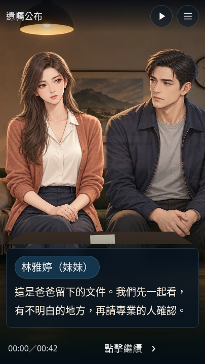
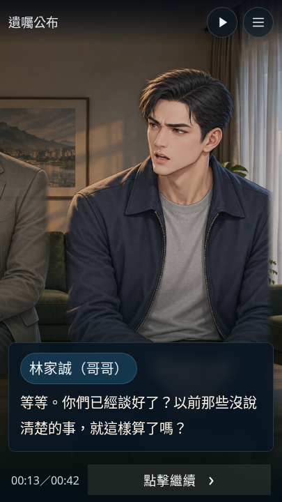
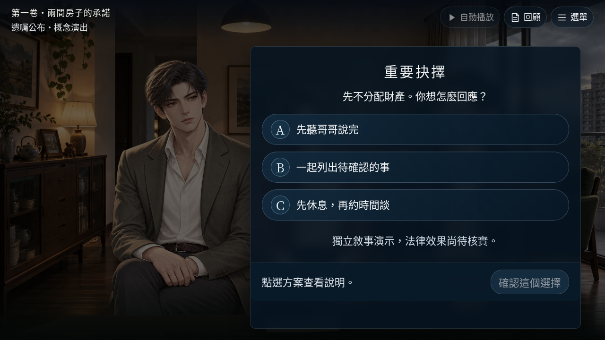
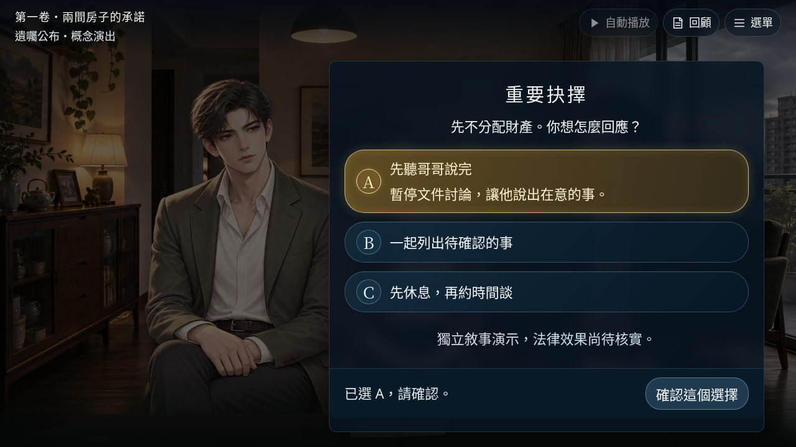
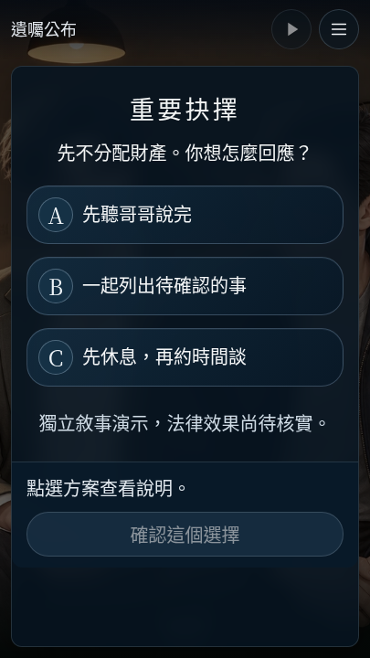
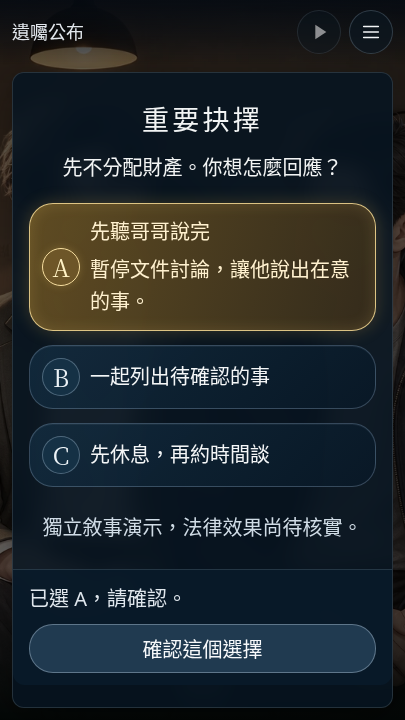
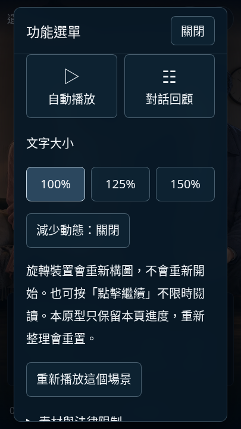
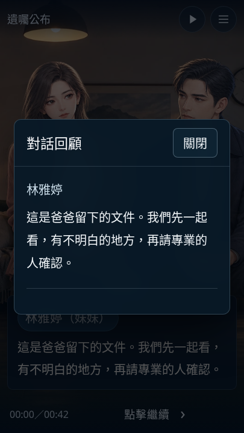
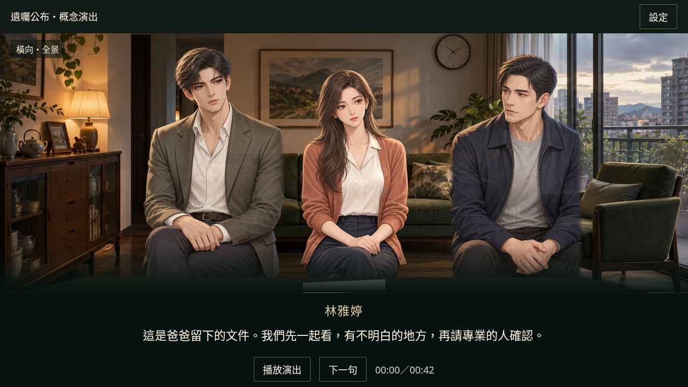

依使用者指定的電影式UI概念圖，改善現有「遺囑公布」單場景。一般對話與重要抉擇分開顯示，只有已選項目亮起金色。










52項單元／回歸、27組尺寸字級與189個字幕安全區檢查通過。100／125／150%、旋轉進度、A/B/C確認與減少動態保留。實體裝置仍待人工驗收。
這是介面原型，不是正式人物美術完成宣告。第一卷分支、正式經營模式、State v4與法律限制不變，尚未整合第一卷。